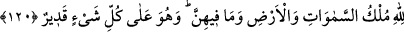

yüzden canına, malına ve mevkiine bir kötülük gelebilir. Belki doğruluğu sebebiyle
kabul görebilir, mevki, mal ve mülk elde edebilir. Bunlar ise Allah ile arasına girip onu
meşgul ederek zarar verebilir. Yine sâdık bir kimse dünyada Hakk’ı talebde sıdk üzere
olabilir. Fakat sonradan ihmalkar davranıp bu sıdktan eser kalmayabilir. Âyette sıdk
üzere ölenlere ve kıyâmete sıdk ile gelenlere işaret edilmektedir. İşte onlara
doğrulukları fayda verecektir.
“Allah onlardan razı olmuştur, onlar da O’ndan razı olmuşlardır.” Yani Allah
sâdıklardan razı olmuştur. Çünkü onlar himmetlerini yüksek tutarak Hakk’ı talebde
sabit-kadem olmuşlardır. Farzları edâ ederek, Habîbullah (a.s.)’a tâbi olmak için
nâfilelerini yerine getirerek Allah’a yaklaşmışlardır. Böyle olunca da Allah onları
sevmiş, onların kulağı, gözü, lisanı ve eli olmuştur. O’nunla işitirler, O’nunla görürler,
O’nunla konuşurlar ve O’nunla tutarlar.
Onlar da O’ndan razı olmuşlardır. Mecazî varlıklarından fenâ bulmuşlardır, O da
onları hakiki varlığı ile bâkî kılmıştır.
İşte içinde olanlarla birlikte âlemin var edilmesinin hikmeti budur. Kâinat, bu
efendiler yaratılış ağacının meyveleri olsun ve Allah’ın bilinmesi (ma’rifeti) için
mahlukatı yarattığı kenz-i mahfî (gizli hazine) ortaya çıkarak ondan faydalansınlar diye
yaratılmıştır. Nitekim Allah Teâlâ: “Ben gizli bir hazine idim. Bilinmeyi sevdim ve
mahlûkatı yarattım.”[77] buyurmaktadır.
120. Göklerin, yerin ve bunlarda bulunan her şeyin mülkü Allah’ındır. O, her şeye
kadirdir.
“Göklerin, yerin ve bunlarda bulunan her şeyin mülkü Allah’ındır.” Bu ifade,
hakikati iyice yerleştirmekte, hristiyanların Hz. Îsâ ile Hz. Meryem hakkındaki yalan ve
fesatlarına da dikkat çekmektedir. Buna göre âyetin mânâsı şöyledir: Göklerin, yerin ve
içlerindeki akıl sahibi olan ve olmayan her şeyin mülkü, yalnız Allah’a mahsustur.
Bunlar üzerinde O, dilediği gibi tasarrufta bulunur; yaratır, yok eder, öldürür, diriltir,
emreder, yasaklar. Bunların hiç birine, kimse müdahalede bulunamaz.
“O, her şeye kadirdir.” Kudretinin sınırı yoktur. Acz ve güçsüz olmaktan münezzeh ve
mukaddestir. Allah Teâlâ, herşeyden yüce, her noksandan berî ve her türlü mükemmel
vasıflarla muttasıftır.
Mesnevî’de şöyle denilmiştir:
Halkına ondan başka kimse sahip değildir.
Helâk olandan başkası ona ortaklık davasına kalkışamaz!
Mülk ve devlette tektir, eşi yok.